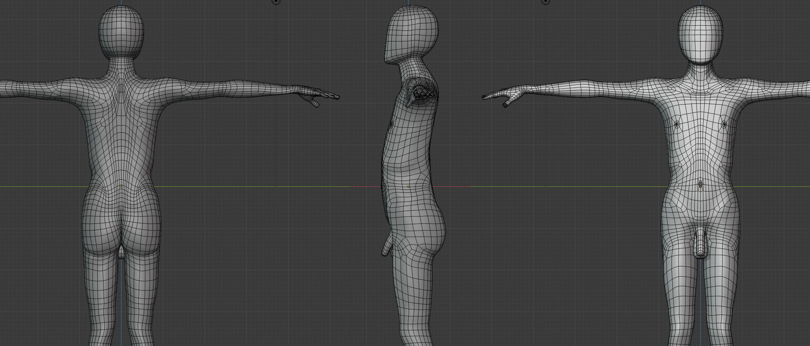
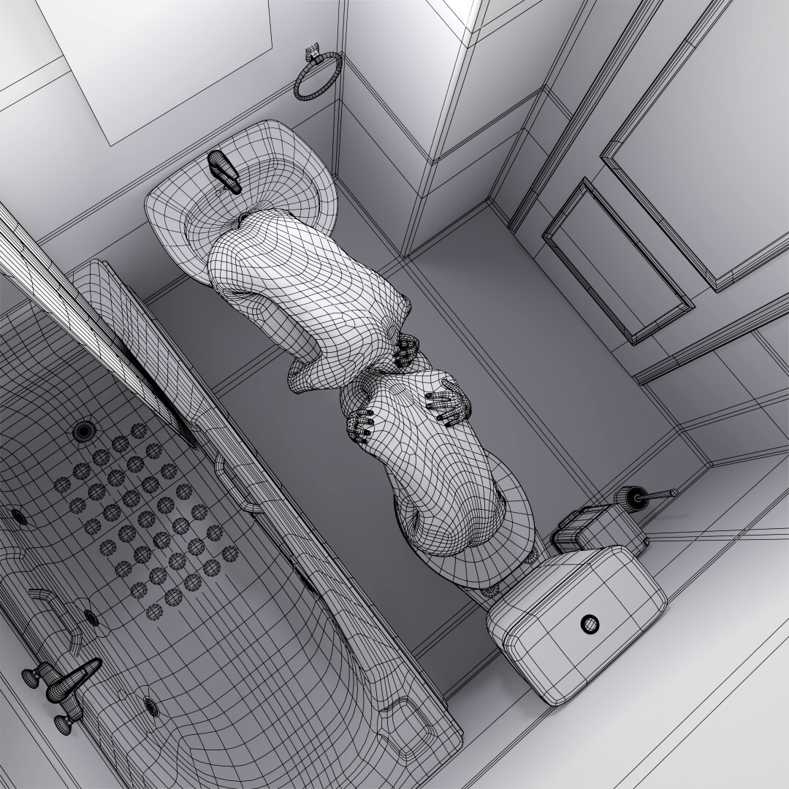
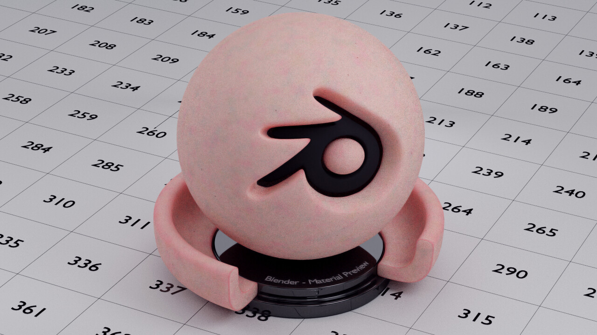
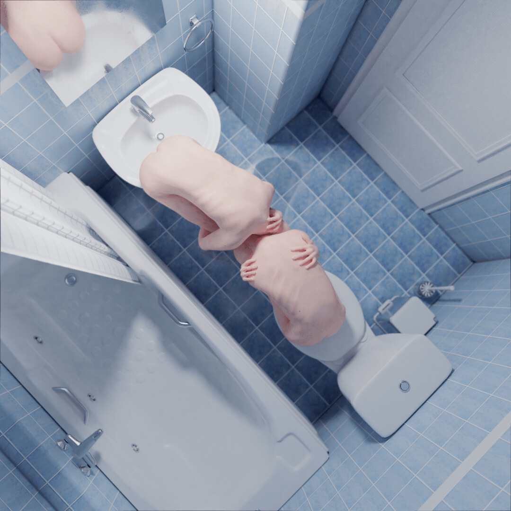

Το πρότζεκτ αποτελεί προϊόν μιας θεωρητικής μου ενασχόλησης σχετικά με την ελευθερία έκφρασης στα αστικά περιβάλλοντα.
Η ιδέα εκκινεί από την ανάγκη ξεσπάσματος και ηχηρής έκφρασης, και συναντιέται με τις αυξημένες τιμές ενοικίων και τις συγκατοικήσεις σε σπίτια χωρίς μόνωσεις. Και πώς τα άγχη της επισφάλειας επιβάλλουν τους ρυθμούς των καθημερινοτήτων μας σε δυσαρμονία βαθαίνωντας τα αισθήματα της μεταξύ μας αποξένωσης μέρα με τη μέρα.
Η σύνθεση επιχειρεί να συμβολίσει καταστάσεις συνύπαρξης με τους ίδιους μας τους εαυτούς, σε τοποθεσίες συμπιεσμένου προσωπικού χώρου. Είτε αυτές αναδύονται ως ανάγκη, είτε ώς υποχρέωση, το συνδετικό στοιχείο είναι η αντίθεση μεταξύ της αυξανόμενης απομόνωσης και του ανεπαρκούς προσωπικού χώρου. Οι τουαλέτες, τα αυτοκίνητα, οι σκοτεινοί δρόμοι και τα ασανσέρ έχουνε αυτή την ιδιότητα ως κοινό. Την διαφοροποίηση τους από τους 4 τοίχους του υπνοδωματίου. Τους 4 τοιχους που βρίσκεσαι να θυσιάζεις τεράστια κομμάτια τις ελευθερίας σου προκειμένου να διεκδικήσεις, οι οποίοι τελικά δεν καταφέρνουν ούτε να μονώσουν τον ήχο της φωνής σου από τους γείτονες και συγκατοίκους σου, αλλά αρκούνε για να μην τους ξέρεις.
   